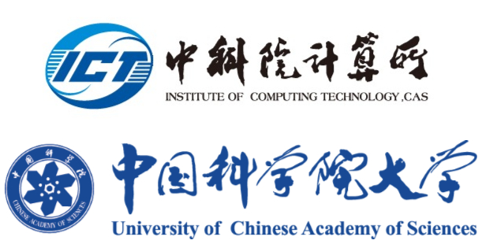

刘珂 (Ke Liu)
副研究员 / Associate Professor
硕士生导师
Institute of Computing Technology (ICT)
Chinese Academy of Sciences (CAS)
University of Chinese Academy of Sciences (UCAS)
Email: liuke@ict.ac.cn

News
News: RaidenSwap: A Multi-Swap Remote System for Multi-core Applications has been accepted to EuroSys 2026.
News: DRack: A CXL-Disaggregated Rack Architecture to Boost Inter-Rack Communication has been accepted to USENIX ATC 2025.
News: A Unified Framework for DRL-Based Congestion Control to Optimize QoS Over Mobile Networks has been accepted to IWQoS 2025.
News: HoPP: Hardware-Software Co-Designed Page Prefetching for Disaggregated Memory has been accepted to HPCA 2023.
News: MARB: Bridge the Semantic Gap Between Operating System and Application Memory Access Behavior has been accepted to DATE 2023.
欢迎对资源解耦、CXL、数据中心网络、RDMA/SmartNIC、智算系统方向感兴趣的同学联系。
About me
刘珂，中国科学院计算技术研究所副研究员，中国科学院特聘技术骨干，硕士生导师。2013年博士毕业于香港中文大学信息工程学系。2017年赴美国普渡大学做访问博士后2年。主持国家自然科学基金青年项目和面上项目、华为项目，北京面上项目，国家重点研发计划课题等。发表论文40余篇，以第一作者和通讯作者发表包括HPCA, EuroSys, ATC, ACM MM, TMC, TPDS 等CCF-A类会议和期刊。华为火花奖获得者。现专注资源解耦合系统，CXL内存总线协议，数据中心网络，以及智算系统的研究。
ICT/ACS Profile,
Google Scholar,
DBLP
Students
- 彭余康 (M.S. in Engineering, Computer Science and Technology, University of Chinese Academy of Sciences)
- 刘可凡 (Ph.D. student at University of Chinese Academy of Sciences, majoring in Computer Science and Technology)
- 李文韬 (M.S. student at University of Chinese Academy of Sciences, majoring in Electronic Information)
- 李文杰 (M.S. student at Zhengzhou University, majoring in Computer Science and Technology)
- 姚文涛 (M.S. student at University of Chinese Academy of Sciences, CAS Modern Industry College)
Projects and Awards
- 中国科学院特聘技术骨干
- 华为火花奖
- 主持国家自然科学基金青年项目：移动数据网络中获得高吞吐率和低延迟的拥塞控制算法研究，30万
- 主持国家自然科学基金面上项目：数据中心近似传输协议，56万
- 主持北京市自然科学基金：FDA-NIC：基于DPDK和FPGA的软硬件共同设计的NFV在线加速框架，20万
- 华为合作项目：软硬协同优化基于内核的远程内存系统，138万
- 华为合作项目：数据中心以太-内存总线互联的资源池架构，150万
- 国家重点研发计划子课题：应用特征表达提取与跨层传播，200万
Selected publications
(Asterisk(*) means corresponding author)
Recent Selected Papers
- RaidenSwap: A Multi-Swap Remote System for Multi-core Applications
by Kefan Liu, Ke Liu*, Xu Zhang, Hui Yuan, Xiaolong Zheng, Ning Liu, Sa Wang, Guanghui Zhang, Yungang Bao, Mingyu Chen, Chenxi Wang
EuroSys, 2026 (CCF-A)
Google Scholar
- DRack: A CXL-Disaggregated Rack Architecture to Boost Inter-Rack Communication
by Xu Zhang, Ke Liu*, Hui Yuan, Xiaolong Zheng, Yisong Chang, Yizhou Shan, Guanghui Zhang, Ke Zhang, Yungang Bao, Mingyu Chen, Chenxi Wang
The USENIX Annual Technical Conference (ATC), 2025 (CCF-A)
Google Scholar
- A Unified Framework for DRL-Based Congestion Control to Optimize QoS Over Mobile Networks
by Jiaqi Yao, Ke Liu*, Guanghui Zhang, Jack Y. B. Lee, Theophilus A. Benson, Yungang Bao, Mingyu Chen
IEEE/ACM International Symposium on Quality of Service (IWQoS), 2025 (CCF-B)
Google Scholar
- DFabric: Scaling Out Data Parallel Applications with CXL-Ethernet Hybrid Interconnects
by Xu Zhang, Ke Liu, Yisong Chang, Hui Yuan, Xiaolong Zheng, Ke Zhang, Mingyu Chen
arXiv preprint arXiv:2409.05404, 2024
Google Scholar
- An Intelligent Learning Approach to Achieve Near-Second Low-Latency Live Video Streaming under Highly Fluctuating Networks
by Guanghui Zhang, Ke Liu*, Mengbai Xiao, Bingshu Wang, Vaneet Aggarwal
ACM Multimedia (ACM MM), 2023 (CCF-A)
Google Scholar
- A Data-Driven Framework for TCP to Achieve Flexible QoS Control in Mobile Data Networks
by Jiaqi Yao, Ke Liu*, Ting Liang, Theophilus A. Benson, Jack Y. B. Lee, Vaneet Aggarwal, Yungang Bao, Mingyu Chen
IEEE/ACM International Symposium on Quality of Service (IWQoS), 2023 (CCF-B)
Google Scholar
- MARB: Bridge the Semantic Gap Between Operating System and Application Memory Access Behavior
by Haifeng Li, Ke Liu*, Ting Liang, Zuojun Li, Tianyue Lu, Yisong Chang, Hui Yuan, Yinben Xia, Yungang Bao, Mingyu Chen, Yizhou Shan
Design, Automation & Test in Europe Conference & Exhibition (DATE), 2023 (CCF-B)
Google Scholar
- HoPP: Hardware-Software Co-Designed Page Prefetching for Disaggregated Memory
by Haifeng Li, Ke Liu*, Ting Liang, Zuojun Li, Tianyue Lu, Hui Yuan, Yinben Xia, Yungang Bao, Mingyu Chen, Yizhou Shan
IEEE International Symposium on High Performance Computer Architecture (HPCA), 2023 (CCF-A)
Google Scholar
- Short Video Streaming With Data Wastage Awareness
by Guanghui Zhang, Ke Liu*, Haibo Hu, Jing Guo
IEEE International Conference on Multimedia and Expo (ICME), 2021 (CCF-B)
Google Scholar
- Exploiting Network Loss for Distributed Approximate Computing with NetApprox
by Ke Liu, Jinmou Li, Shin-Yeh Tsai, Theophilus A. Benson, Yiying Zhang
arXiv preprint arXiv:1901.01632, 2019
Google Scholar
- Joint Upload-Download TCP Acceleration Over Mobile Data Networks
by Ke Liu, Vaneet Aggarwal, Ziyu Shao, Jack Y. B. Lee, Mingyu Chen
IEEE International Conference on Sensing, Communication and Networking (SECON), 2017 (CCF-B)
- Adaptive Rate Control over Mobile Data Networks with Heuristic Rate Compensations
by Ke Liu, Zhuang Wang, Jack Y. B. Lee, Mingyu Chen, Lixin Zhang
IEEE/ACM International Symposium on Quality of Service (IWQoS), 2016 (CCF-B)
Google Scholar
- Intra-host Rate Control with Centralized Approach
by Zhuang Wang, Ke Liu*, Yifan Shen, Jack Y. B. Lee, Mingyu Chen, Lixin Zhang
IEEE International Conference on Cluster Computing (CLUSTER), 2016 (CCF-B)
Google Scholar
- Optimizing TCP Loss Recovery Performance Over Mobile Data Networks
by Zhongbin Zha, Ke Liu*, Binzhang Fu, Mingyu Chen
IEEE International Conference on Sensing, Communication and Networking (SECON), 2015 (CCF-B)
Google Scholar
- Achieving High Throughput and Low Delay by Accurately Regulating Link Queue Length over Mobile Data Network
by Ke Liu, Jack Y. B. Lee
IEEE International Conference on Wireless and Mobile Computing, Networking and Communications (WiMob), 2014
Google Scholar
- Improving TCP Performance over Mobile Data Networks with Opportunistic Retransmission
by Ke Liu, Jack Y. B. Lee
IEEE Wireless Communications and Networking Conference (WCNC), 2013 (CCF-C)
Google Scholar
- Impact of TCP Protocol Efficiency on Mobile Network Capacity Loss
by Ke Liu, Jack Y. B. Lee
International Symposium on Modeling and Optimization in Mobile, Ad Hoc, and Wireless Networks (WiOpt), 2013
Google Scholar
- Mobile Accelerator: A New Approach to Improve TCP Performance in Mobile Data Networks
by Ke Liu, Jack Y. B. Lee
International Wireless Communications and Mobile Computing Conference (IWCMC), 2011 (CCF-C)
Google Scholar
Journal papers
- On Queue Length and Link Buffer Size Estimation in 3G/4G Mobile Data Networks
by Stanley C. F. Chan, K. M. Chan, Ke Liu, Jack Y. B. Lee
IEEE Transactions on Mobile Computing, 2014, 13(6): 1298-1311 (CCF-A)
- On Improving TCP Performance over Mobile Data Networks
by Ke Liu, Jack Y. B. Lee
IEEE Transactions on Mobile Computing, 2016, 15(10): 2522-2536 (CCF-A)
- Optimized Preference-Aware Multi-Path Video Streaming with Scalable Video Coding
by Anis Elgabli, Ke Liu, Vaneet Aggarwal
IEEE Transactions on Mobile Computing, 2020, 19(1): 159-172 (CCF-A)
- Optimizing TCP Loss Recovery Performance Over Mobile Data Networks
by Ke Liu, Zhongbin Zha, Wenkai Wan, Vaneet Aggarwal, Binzhang Fu, Mingyu Chen
IEEE Transactions on Mobile Computing, 2020, 19(6): 1401-1419 (CCF-A)
- Post-Streaming Wastage Analysis: A Data Wastage Aware Framework in Mobile Video Streaming
by Guanghui Zhang, Ke Liu*, Haibo Hu, Vaneet Aggarwal, Jack Y. B. Lee
IEEE Transactions on Mobile Computing, 2021 (CCF-A)
Google Scholar
- A Unified Framework for Flexible Playback Latency Control in Live Video Streaming
by Guanghui Zhang, Jack Y. B. Lee, Ke Liu*, Haibo Hu, Vaneet Aggarwal
IEEE Transactions on Parallel and Distributed Systems, 2021, 32(12): 3024-3037 (CCF-A)
- DUASVS: A Mobile Data Saving Strategy in Short-Form Video Streaming
by Guanghui Zhang, Jie Zhang, Ke Liu*, Jing Guo, Jack Y. B. Lee, Haibo Hu, Vaneet Aggarwal
IEEE Transactions on Services Computing, 2023, 16(2): 1066-1078 (CCF-A)
Google Scholar
- SLVS: A Self-Learning Approach to Achieve Near-Second Low-Latency Video Streaming under Highly Variable Networks
by Guanghui Zhang, Ke Liu*, Mengbai Xiao, Bingshu Wang, Dongxiao Yu, Xiuzhen Cheng
IEEE Transactions on Mobile Computing, 2025, 24(6): 5189-5201 (CCF-A)
Google Scholar